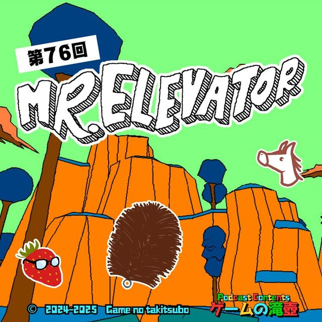
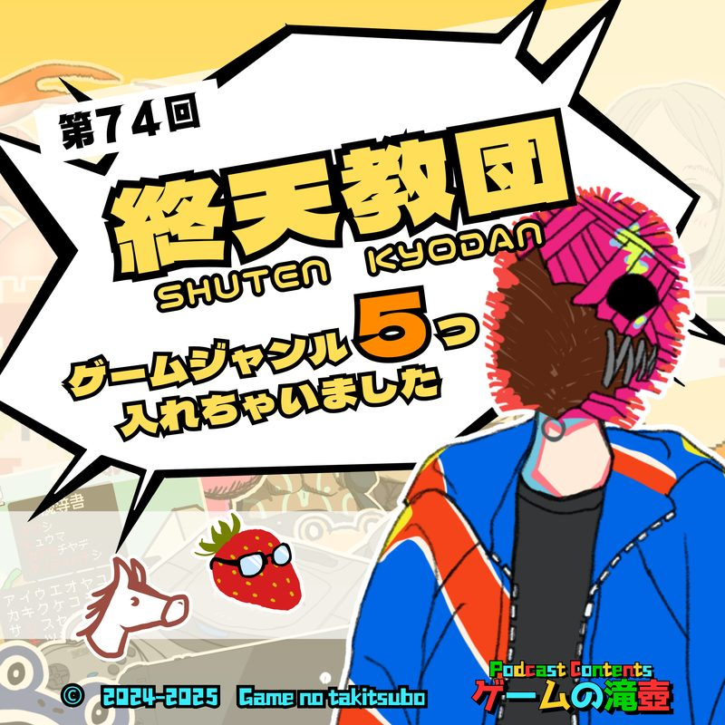
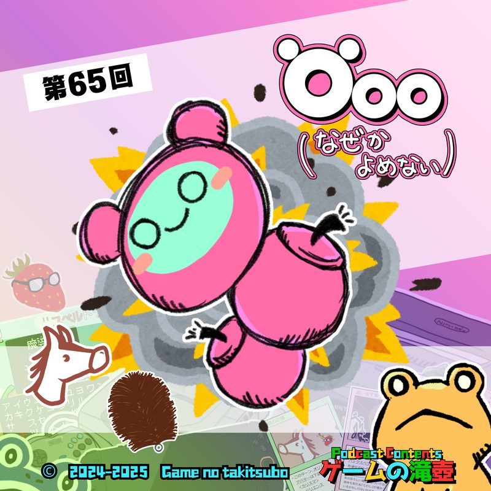
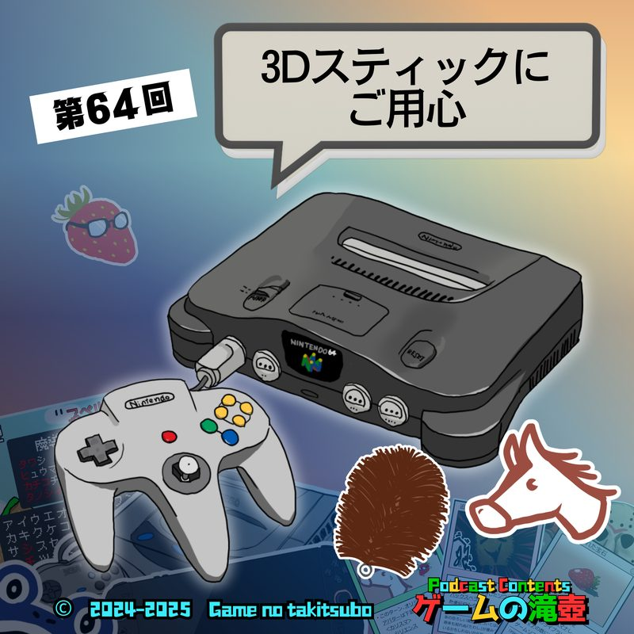

ワンス・アポン・ア・塊魂
ポッドキャスト「ゲームの滝壺」で「ワンス・アポン・ア・塊魂」が話題に出た回の一覧です。
滝壺での登場 6回トークの中でたびたび話題に出ているタイトルです。

#762025.10.29💬 トーク内で登場 ミスターエレベーター「両腕が動かせるゲームをお探しの方におすすめです」 ビジュアルが異彩を放つ謎解きゲーム、ミスターエレベーターについて話します！ 製品はギフトテンインダストリさんに無償提供いただきました！ ブログでの紹介記事： https://www.tawashix.com/entry… #752025.10.22💬 トーク内で登場
みんなのゲームにまつわる怖い話！ こんな猿のゲームで捕まりたくない！
リスナーのみなさんから投稿いただいた、ゲームに関係する怖い話を紹介します！
#752025.10.22💬 トーク内で登場
みんなのゲームにまつわる怖い話！ こんな猿のゲームで捕まりたくない！
リスナーのみなさんから投稿いただいた、ゲームに関係する怖い話を紹介します！

#742025.10.15💬 トーク内で登場 終天教団「ゲームジャンル5つ入れちゃいました」 5種類のゲームが詰め込まれたマルチジャンルADV、終天教団について話します！ #732025.10.08💬 トーク内で登場
君はフロムのVRゲームを知っているか！？ Déraciné（デラシネ）
初代PSVRの名作アドベンチャー、Déraciné（デラシネ）についてネタバレありで話します！ エルデンリング等で有名なフロム・ソフトウェア製、時間停止中に妖精さんがいたずらをする刺激的なゲームです！！
#732025.10.08💬 トーク内で登場
君はフロムのVRゲームを知っているか！？ Déraciné（デラシネ）
初代PSVRの名作アドベンチャー、Déraciné（デラシネ）についてネタバレありで話します！ エルデンリング等で有名なフロム・ソフトウェア製、時間停止中に妖精さんがいたずらをする刺激的なゲームです！！

#652025.08.20💬 トーク内で登場 Öoo（なぜか読めない）圧倒的好評の爆弾いもむしアクションパズル、爆誕 圧倒的好評すぎるアクションパズルゲームのÖoo、その前作のElecHead、ついでに虫のアクションパズルゲームつながりでCOCOONについても話します！
#642025.08.13💬 トーク内で登場 NINTENDO64「3Dスティックにご用心」 NINTENDO64にまつわる思い出、印象的なタイトルからコントローラーの特徴、さらにケーブルをどう巻き付けて片付けるかまで話します！TALKED TOGETHER同じ回で話題に出たタイトル
🎧 気になった回は、各ページのプレイヤーからすぐ再生できます。
「ワンス・アポン・ア・塊魂」の話がもっと聴きたくなったら、おたよりでリクエストしてもらえると番組が喜びます。